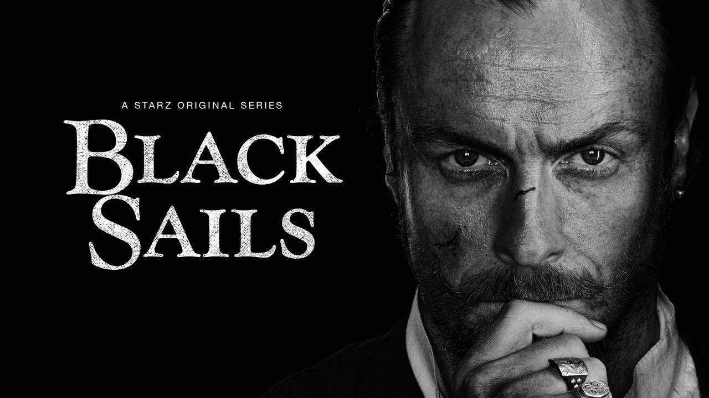
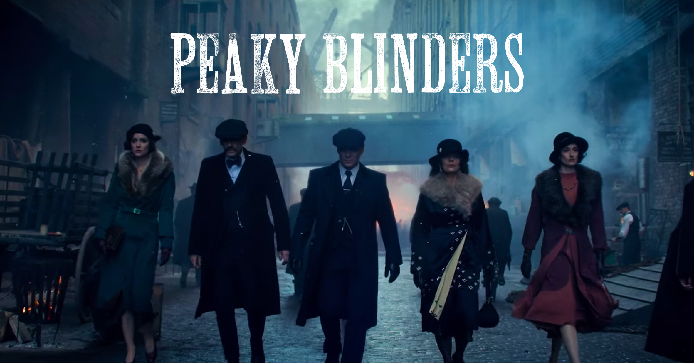

مسلسلات تتحدث عن نفسها

الأشرعة السوداء (بالإنجليزية: Black Sails) هو مسلسل دراما ومغامرات أمريكي تقع أحداثه قبل 20 سنة من أحداث راوية جزيرة الكنز للكاتب روبرت لويس ستيفنسون. المسلسل من تأليف جوناثان إي. شتاينبرغ وروبرت ليفين، عرض لأول مرة على قناة ستارز في 25 يناير 2014. قصة المسلسل تقع على جزيرة بروفيدانس الجديدة خلال العصر الذهبي للقراصنة وتتبع مغامرات القبطان القبطان فلينت وقراصنته. العديد من القراصنة الحقيقين تم تجسيدهم في المسلسل أمثال آن بوني وجاك راكهام وتشارلز فاين واللحية السوداء. في 26 يوليو 2013، تم تجديد الأشرعة السوداء لموسم ثاني مكون من 10 حلقات. التجديد المبكر للمسلسل قبل 6 أشهر من عرض الحلقة الأولى جاء بسبب ردود الفعل الإيجابية للجمهور تجاه المسلسل في كوميك-كون. تم التجديد لموسم ثالث في 12 أكتوبر 2014 ولموسم رابع في 31 يوليو 2015.

كانت بيكي بلايندرز عصابة شوارع حضرية مقرها في برمنغهام، إنجلترا، والتي كانت تعمل منذ نهاية القرن التاسع عشر وبعد الحرب العالمية الأولى. كانت المجموعة، التي نشأت من الحرمان الاقتصادي القاسي لبريطانيا من الطبقة العاملة، تتألف إلى حد كبير من الشباب من الطبقة الدنيا إلى الطبقة المتوسطة. لقد استمدوا القوة الاجتماعية من السرقة والعنف والابتزاز والمراهنة غير القانونية والسيطرة على المقامرة. كان أعضاء هذه العصابة يرتدون ملابس مميزة شملت السترات المصممة، ومعاطف طية صدر السترة، وصدريات الأزرار، والأوشحة الحريرية، وسراويل بيل بوتومز، والأحذية الجلدية، والقبعات المسطحة. كانت العصابة منظمة بشكل كبير مع أنظمة التسلسل الهرمي الخاصة بها. جاءت هيمنة العصابة بسبب هزيمة المنافسين، مثل "الكسالى"، الذين قاتلوا من أجل أرض في برمنغهام والمناطق المحيطة بها. سيطروا لمدة 20 عاماً تقريباً حتى عام 1910، عندما قامت عصابة أكبر، هم برمنغهام بويز بقيادة بيللي كيمبر، بالسيطرة عليها. ومع ذلك، على الرغم من اختفائهم بحلول عشرينيات القرن العشرين، أصبح اسم "بيكي بلايندرز" هو مرادفاً عاماً لأي عصابة في الشوارع في برمنغهام. في عام 2013، تمت إعادة استخدام الاسم لمسلسل تلفزيوني لهيئة الإذاعة البريطانية بعنوان بيكي بلايندرز. المسلسل الذي يقوم ببطولته كيليان مورفي، بول أندرسون، وجو كول، هو قصة جريمة عن عائلة جريمة خيالية تعمل في برمنغهام بعد الحرب العالمية الأولى.